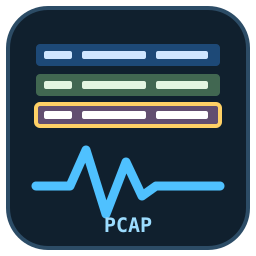
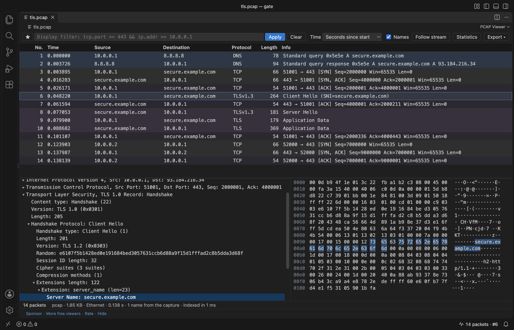
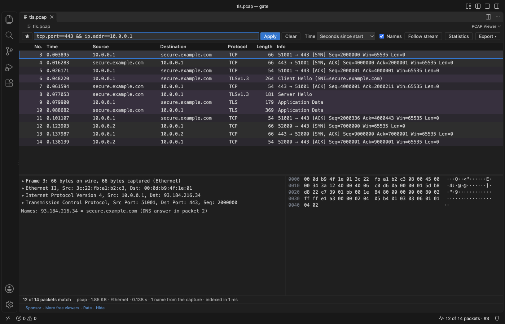
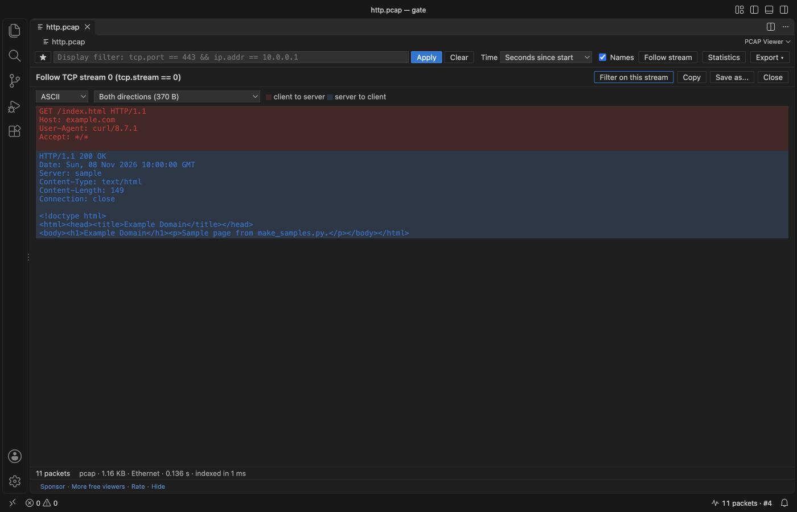
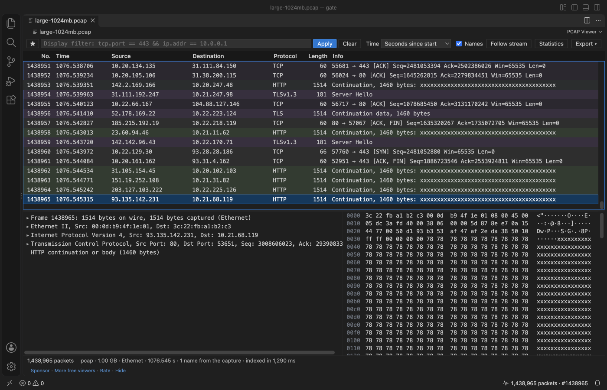
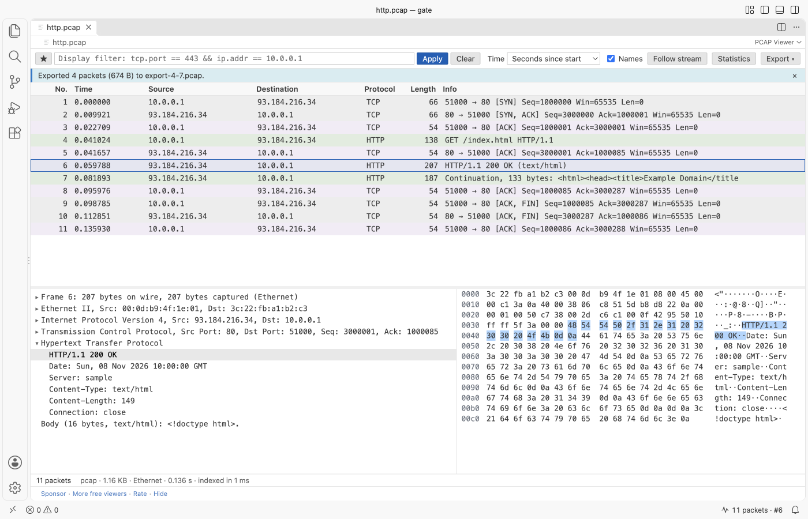

PCAP Viewer & PCAPNG Viewer (Packet Capture Analyzer)
PCAP Viewer & PCAPNG Viewer (Packet Capture Analyzer), a VS Code extension by Zovo
PCAP viewer and PCAPNG viewer for VS Code: a packet capture analyzer with a packet list, protocol tree and linked hex pane, display filters, follow TCP stream, conversations and endpoints. Opens .pcap.gz and 1 GB captures. Pure JS, nothing to install (no Wireshark or sharkd). Free, no sign-in, works offline.
Free, MIT license. Needs VS Code 1.90.0 or newer. Extension ID zovo.zovo-pcap-viewer, version 0.2.0.
Free, no sign-in, works offline. Open .pcap, .pcapng, .pcap.gz and .pcapng.gz captures in VS Code and read them like in a packet analyzer: a packet list, a protocol tree, a hex pane linked to the tree, display filters, follow TCP stream, conversations and endpoints. Everything runs in JavaScript inside VS Code. You do not need Wireshark, tshark or sharkd.
![http.pcap open in PCAP Viewer inside VS Code. The packet list shows a TCP handshake, an HTTP GET for /index.html, the 200 OK response and the FIN packets, each row tinted by protocol. Packet 4 is selected. The protocol tree below lists Frame, Ethernet II, IPv4, TCP and Hypertext Transfer Protocol; the Host: example.com line is selected and its 19 bytes are lit in the hex pane on the right. The toolbar has the display filter with a star menu, Apply, Clear, the time format, Names, Follow stream, Statistics and Export.](pcap-viewer-http.png)
Real output from VS Code 1.142 on macOS. scripts/e2e-vscode.mjs installed the packaged extension in a clean VS Code profile, opened http.pcap (made by scripts/make_samples.py), clicked packet 4 and the Host line, and saved the window through the debug port.
- Nothing to install, on Windows, macOS and Linux. Other viewers need a local Wireshark with
sharkd; when the path is wrong they stop at "sharkd connection not ready". This one reads the file itself. .pcap.gzand.pcapng.gzopen directly, unpacked in memory with a size cap, so a gzip bomb stops with a message.- Host names come from the capture itself: DNS answers in its packets and the name blocks of pcapng files. Nothing is looked up on the network, so opening a capture never sends a DNS query.
- Click a field to light up its bytes. Click a byte to find its field.

Quick start
- Install PCAP Viewer.
- Click a
.pcap,.pcapng,.pcap.gzor.pcapng.gzfile. For.capor other names, right-click the file in the Explorer and pick "Open in PCAP Viewer". - Type a filter such as
tcp.port == 443 && ip.addr == 10.0.0.1and press Enter. Double-click a packet to follow its stream.
"PCAP Viewer: Get Started" in the Command Palette opens a short tour.
Questions people ask
Is PCAP Viewer & PCAPNG Viewer (Packet Capture Analyzer) free?
Yes. PCAP Viewer & PCAPNG Viewer (Packet Capture Analyzer) is free and MIT licensed.
How do I install PCAP Viewer & PCAPNG Viewer (Packet Capture Analyzer)?
Click "Install in VS Code" above, or search for zovo.zovo-pcap-viewer in the Extensions view.
What it reads
| Files | pcap (microsecond and nanosecond, little and big-endian), pcapng (section, interface, enhanced and simple packet blocks, name resolution blocks, comments; other blocks are skipped), both as .gz |
|---|---|
| Link types | Ethernet, 802.1Q VLAN, Linux cooked capture (SLL and SLL2), raw IPv4 and IPv6, BSD loopback, 802.11 (header) and radiotap |
| Protocols | ARP, IPv4, IPv6 with extension headers, ICMP, ICMPv6, TCP (with options), UDP, DNS and mDNS, DHCP, HTTP/1.x, TLS records with the Client Hello server name (SNI) and ALPN, QUIC long headers |
Display filters

The filter box takes the common part of the Wireshark display filter syntax. It turns green when the filter is valid and says what is wrong when it is not.
| Filter | Shows |
|---|---|
tcp, udp, dns, http, tls, quic, arp, icmp, dhcp | packets with that protocol |
ip.addr == 10.0.0.1, ip.src, ip.dst, ipv6.addr | an address, either side or one side |
ip.addr == 10.0.0.0/24 | a subnet |
tcp.port == 443, udp.port in {53 5353} | a port or a set of ports |
dns.qry.name contains "example", http.host matches "^api\." | text in a field |
tls.sni == "example.com", http.request.method == "POST" | one server name, one method |
frame.len > 1000, tcp.flags.syn == 1, tcp.stream == 3 | sizes, flags, one connection |
Join conditions with &&, || and ! (or and, or, not) and brackets. The star button saves filters you use often (setting pcapViewer.savedFilters).
Follow stream, statistics and export

- Follow stream (double-click a packet): the data of one TCP or UDP connection in order, client to server in red and server to client in blue, as ASCII, UTF-8 or a hex dump. Copy it or save it to a file. Retransmitted bytes are shown once.
- Statistics: protocol hierarchy, conversations (Ethernet, IPv4, IPv6, TCP, UDP), endpoints and the names found in the capture. Click a row to filter on it.
- Right-click a packet to filter on its source, destination, conversation or protocol, or to copy the row.
- Export the selected packets, or every packet the filter shows, as a new pcap file (pcapng when the packets have more than one link type).
Large and damaged files

In the release checks (VS Code 1.142, a busy Mac), a 1 GB capture with 1,438,965 packets listed in about 2 s (1.3 to 2.3 s), End went to the last packet in under 1 s, the filter dns && ip.addr == 10.0.0.0/8 read all of it in 5 to 12 s (94,636 matches), and the extension host stayed between 287 and 406 MB. tcpdump counted the same 1,438,965 packets.
- The file is read in a worker thread, in 4 MB pieces, so VS Code stays responsive. A progress bar shows how far indexing is.
- The packet list only decodes the rows on screen. Filters, statistics and follow stream read the file again in pieces, with progress.
- A damaged file shows every packet before the damage and a plain message that says what is wrong and where: a block with length 0, a block that points past the end of the file, a packet larger than 256 KB, a file cut off in the middle of a packet. Reading never loops.
- A
.gzfile stops unpacking at 512 MB (settingpcapViewer.maxGzipMB) and says so. A 10 GB gzip bomb opens in about a second with that message. - Broken headers inside packets (an IPv4 header length under 20 bytes, a TCP data offset past the end, a DNS name that points to itself) are marked "Malformed" in the list and in the tree. The filter
_ws.malformedfinds them.
Dark, light and high contrast themes come from your VS Code theme, and buttons use the theme's button colors.

Privacy
PCAP Viewer has no telemetry and makes no network requests. The webview has a Content Security Policy of default-src 'none' and gets every byte from the extension through VS Code messages. Names are never looked up on the network. The only links that leave VS Code are the Sponsor, GitHub and Marketplace links, and only when you click them.
Settings
| Setting | Default | |
|---|---|---|
pcapViewer.timeFormat | relative | Time column: seconds since the first packet, since the previous packet shown, or the date and time in UTC or local time |
pcapViewer.resolveNames | true | Names from the capture in the Source and Destination columns |
pcapViewer.savedFilters | 5 examples | Filters in the star menu |
pcapViewer.maxGzipMB | 512 | Largest size a .gz capture unpacks to |
pcapViewer.maxRemoteMB | 256 | Largest file read from a remote or virtual file system |
pcapViewer.askForRating | true | One rating request after a few days of use; never after an error |
pcapViewer.showSupportLinks | true | Sponsor and More free viewers links under the viewer |
Works in
VS Code 1.90 and later, and editors that install from Open VSX (Cursor, Windsurf, VSCodium and others). Remote, WSL, SSH and virtual workspaces work; remote files open up to 256 MB.
Licence
MIT. Sample captures in the tests are made by scripts/make_samples.py; no third-party capture files are included.
Guides
Install PCAP Viewer & PCAPNG Viewer (Packet Capture Analyzer)
Click the button to open VS Code and install it, or press Ctrl+P (Cmd+P on macOS) in VS Code and run ext install zovo.zovo-pcap-viewer.
Free, MIT license. Needs VS Code 1.90.0 or newer. Extension ID zovo.zovo-pcap-viewer, version 0.2.0.
Source code and issues are on GitHub.
Support this work
If this extension saves you time, you can support the work on GitHub Sponsors. Monthly tiers start at $5, and one-time tiers start at $15. Sponsorship is optional, and the tool works the same without it.
Need your format supported?
Open a format request with a sample file, and I reply there whether it can be done. For USD 299 once, through this GitHub Sponsors tier, I add your file format or a missing feature to this extension, with tests, within 7 days.